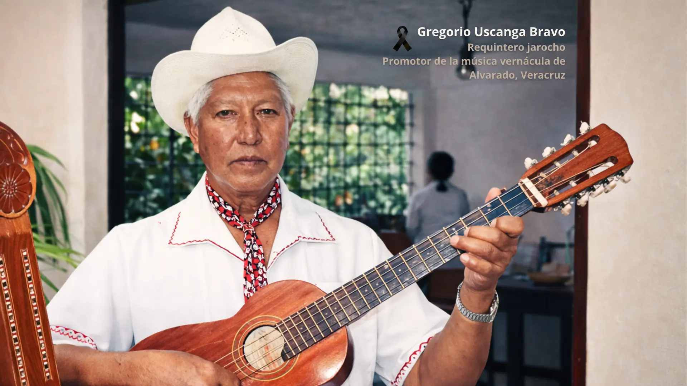
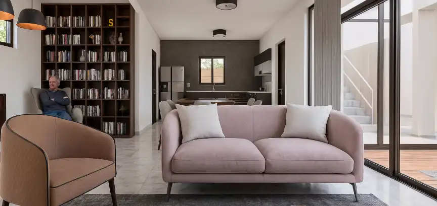
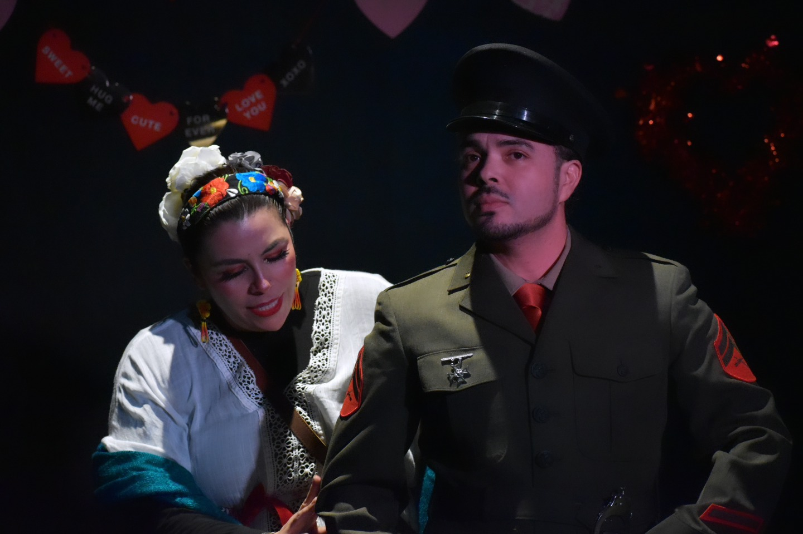
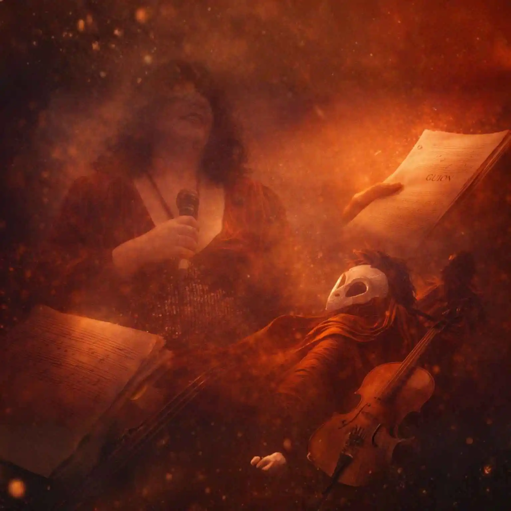
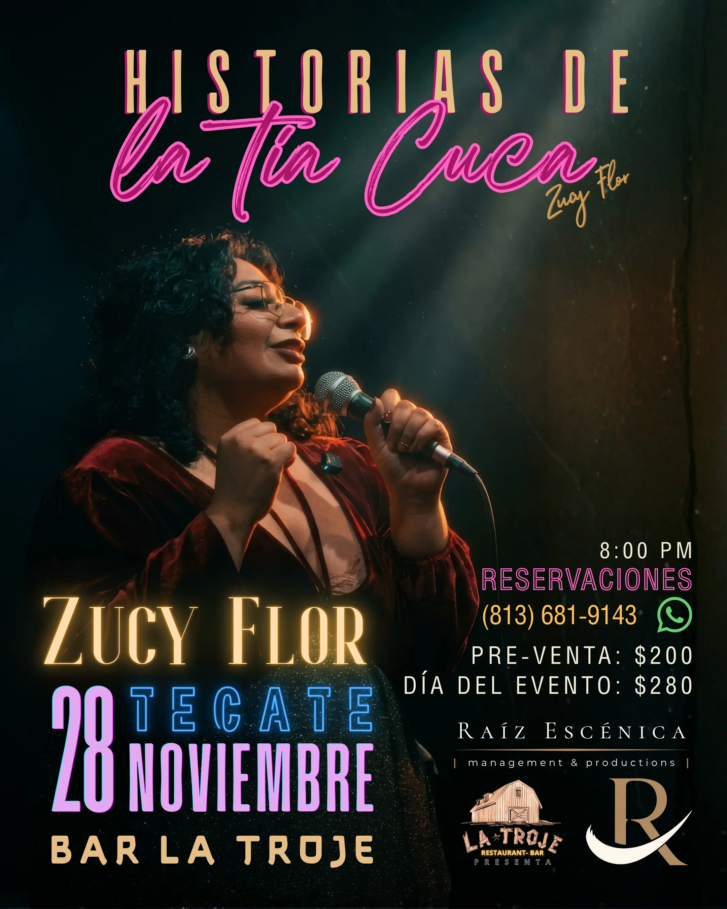

Un origen,
muchas formas
Cada proyecto tiene su propia voz y todos comparten la misma raíz.

Son Zapateado
Taller experimental de danza folklórica veracruzana.
Explorar →
ArquiBita Estudio
Creamos espacios arquitectónicos y escénicos con precisión técnica y carácter visual.
Explorar →
Teatro
Participaciones artísticas con compañías teatrales, cartelera y galería de montajes.
Explorar →
Raíz Escénica
Plataforma dedicada a la creación, gestión y producción escénica. Nacemos desde la raíz del arte para impulsar proyectos teatrales, musicales y performativos con identidad, rigor y sensibilidad.
Explorar →
Zucy Flor Comedy
Historias de la Tía Cuca — monólogos, comedia y relatos escénicos que conectan con la memoria, la frescura y la cotidianidad humorística del territorio. Cartelera de funciones de Raíz Escénica en Tonal Raíz.
Ver detalle del eventoNuestra esencia…
Tonal Raíz impulsa la creación como un medio para preservar y difundir nuestras tradiciones.
Integramos danza, teatro, arquitectura y prácticas creativas para fortalecer la memoria cultural y mantener vivas las raíces que nos definen. Trabajamos desde la colaboración, el territorio y la claridad conceptual. Cada proyecto busca conectar comunidad, identidad y expresión contemporánea sin perder el vínculo con su origen.
Vayamos al origen